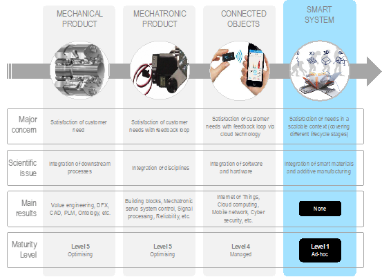
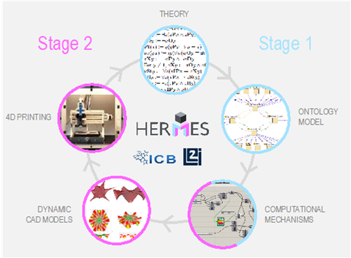

Hermes
Spatiotemporal semantics and logical knowledge description of mecHanical objEcts in the era of 4D pRinting and programmable Matter for nExt-generation of CAD systemS
key-words: Advanced materials, Smart systems, 4D printing
Presentation
An innovative trend promoted by the unique capabilities of additive manufacturing techniques is about the “4D Printing” concept. It is actually the process by which assemblies and parts embodying smart materials are printed, they are therefore able to react to changes in their environment. As a new way of thinking and manufacturing method, few is known about how to systematically bring such smart products ideas into reality. This HERMES research proposal aims at introducing a general framework for designing 4D printed solutions. It delineates the research effort to be made so that designers are sufficiently empowered to design such smart products. For this reason, the HERMES project proposal aims at elaborating (i) a strong foundational theory enough suitable for covering the semantic and logical description of dynamical phenomena knowledge at various scales (i.e. territory/building, mechanical assembly, material, etc.), (ii) a multi-layer ontology for semantic and logical reasoning, on which (iii) computational mechanisms will be developed in order to deliver dynamical CAD models ready for 4D printing. All these objectives present cutting edges efforts from a logical and semantic point of view as well as from a procedural perspective, and will be achieved via an original collaboration connecting fields of mechanical engineering, material engineering, artificial intelligence and geoinformatics. The ultimate goal of HERMES is to extend current CAD systems capabilities to fully embrace 4D printing opportunities and the increase of reasoning capacities embedded in systems and matter.
Présentation
Une tendance innovante, favorisée par les capacités uniques des techniques de fabrication additive, porte sur le concept de « 4D Printing » (impression 4D). Ceci concerne plus particulièrement le processus par lequel sont imprimés les assemblages et les pièces intégrant des matériaux intelligents, capables de réagir aux changements de paramètres dans leur environnement. Cette nouvelle manière de penser et de fabriquer demeure assez vierge au des travaux de recherche sur les modèles et méthodes permettant de conduire les concepteurs de l’idée jusqu’à la réalisation de systèmes intelligents. Ce projet de recherche vise à introduire un cadre méthodologique pour la conception de solutions couplant matériaux intelligents et technologies de fabrication additive. Il esquisse les principaux efforts scientifiques à mener afin que les concepteurs soient suffisamment autonomes pour développer ces systèmes émergents. Pour ce faire, le projet proposé HERMES a pour objectifs d’élaborer (i) une théorie fondamentale suffisamment adaptée pour couvrir la description sémantique et logique des connaissances de phénomènes dynamiques suivant différentes échelles (i.e. territoire/bâtiment, assemblage mécanique, matériel, etc.), (ii) une ontologie multicouche pour le raisonnement sémantique et logique, sur laquelle (iii) les mécanismes de raisonnement géométrique et spatial seront développés afin de générer des modèles CAO dynamiques prêts pour l'impression 4D. Ces objectifs présentent donc un effort stratégique d'un point de vue logique, sémantique ainsi que procédural, et seront atteints grâce à une collaboration originale reliant les domaines de la mécanique, de l'ingénierie des matériaux, de l'informatique et de la géomatique. L'objectif ultime de HERMES est d'étendre les capacités actuelles des systèmes de CAO aux possibilités offertes d'impression 4D et l’augmentation des capacités de raisonnement embarqués dans les systèmes et la matière.

Figure 1. Evolution of product kinds and related scientific challenges, results, maturity level

Figure 2. Scope of HERMES
Données sur le projet
L’équipe de projet
- DIMASSI Saousen, PhD
- DEMOLY Frédéric - UTBM - COMM/ICB
- GOMES Samuel - UTBM COMM/ICB
- CRUZ Christophe - UB - SD/LIB
Financé par
PIA3 - I-Site UBFC
Durée du projet
Octobre 20018 à décembre 2022